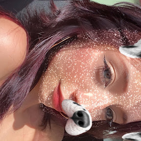

Meu nome e Isabella tenho 16 anos, nasci em Itabiba e moro aqui desde sempre. Gosto Muito de Arte em geral , costurar e bordar, passo grande parte do meu tempo vendo muitas series, sou apaixonada em cinema e teatro, gosto muito de mudar o cabelo e passar tempo com meus amigos e minha familia.
Geralmente trabalho como baba para amigas da minha mae, nos dias de hoje ainda nao possuo um trabalho, mas estou procurando.